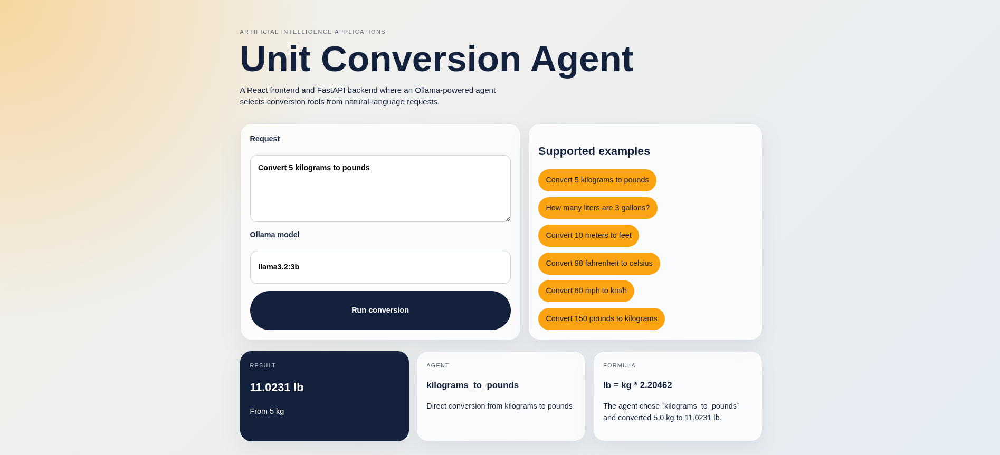

This mini-project implements a unit conversion tool built around a large language model. The goal of the project is to combine a React-based user interface with a Python FastAPI backend and use an LLM agent to decide which conversion tool should be executed. The system is designed so that the language model does not directly perform arithmetic by itself. Instead, it interprets the natural-language request, selects the correct tool, and passes the numerical input to that tool.
The project follows the required split architecture with a frontend for the user interaction and a backend API that exposes the LLM orchestration. Ollama is used as the local LLM provider. This makes the solution reproducible and aligned with the assignment requirement that at least one LLM must be used through Ollama.
The solution is divided into three main parts:
The backend is the central integration point. The frontend communicates only with
the FastAPI API, while the FastAPI service communicates with the Ollama server over
HTTP on http://localhost:11434.
The user interface was implemented in React and designed to make the conversion flow simple. The user can enter a natural-language prompt such as “Convert 5 kilograms to pounds”, optionally choose an Ollama model, and submit the request. The UI then displays the calculated result, the tool selected by the agent, and the conversion formula used.

Figure 1. Screenshot of the React frontend.
The backend API exposes two endpoints:
A typical request body is:
{
"user_input": "Convert 5 kilograms to pounds",
"model": "llama3.2:3b"
}
The solution uses one agent called ConversionAgent. This agent receives
the user request, sends a system prompt and a user prompt to Ollama, and asks the
model to return a JSON object describing which tool to call and what numeric value
to pass to that tool.
The current implementation includes six tools, satisfying the minimum requirement:
Each conversion is implemented as a dedicated backend function. This means the agent acts as the decision-maker, while the actual arithmetic is handled by deterministic tool functions. This approach reduces the risk of arithmetic hallucinations and makes the architecture easier to test and document.
The default model configured in the current version is llama3.2:3b.
This model was selected as an initial baseline because it is lightweight, easy to
run locally through Ollama, and suitable for short classification-style tasks such as
selecting a tool from a constrained list. The Promptfoo setup also includes five more
candidate models: llama3.1:8b, mistral:7b,
qwen2.5:7b, gemma2:9b, and phi3:3.8b.
The final model choice should be based on evaluation results. The report should discuss tradeoffs between speed, local resource usage, consistency of tool selection, and numerical correctness.
The prompting strategy is based on constrained structured output. The system prompt tells the model that it is a unit conversion agent, that it must choose exactly one available tool, and that it must return JSON only. The user prompt includes the list of available tools and the original natural-language request.
This design is influenced by structured prompting and tool-usage prompting. By giving the model a restricted set of tools and a strict JSON schema, the solution reduces ambiguity and makes the backend easier to validate. The prompt also encourages the model to extract a single numeric value from the request, which is important for reliable tool invocation.
Two Promptfoo configuration files were prepared to satisfy the second part of the assignment. They split the evaluation into a basic conversion file and an extended evaluation file. Together they cover six Ollama models and include rubric-based scoring. Suggested evaluation cases include direct commands such as “Convert 5 kilograms to pounds” and alternative phrasings such as “How many liters are 3 gallons?”.
The main evaluation criteria are whether the model chooses the correct tool, whether it extracts the correct numeric input, and whether the final converted value is numerically reasonable. After the evaluations are run, screenshots from Promptfoo should be attached and the final report should explain which model performed best and why.
The current version fulfills the main implementation requirements from part 1 of the assignment: a React interface exists, a FastAPI backend exists, Ollama is integrated as the LLM provider, one agent is used for orchestration, and at least six conversion tools are available. In addition, the project already contains Promptfoo configuration files for part 2 and a documentation structure that can be expanded with actual evaluation results.
The next recommended step is to run the Promptfoo evaluations against the six chosen models, collect screenshots, and update the final report with the concrete findings. That will make the report complete and provide a clear justification for the final production model.